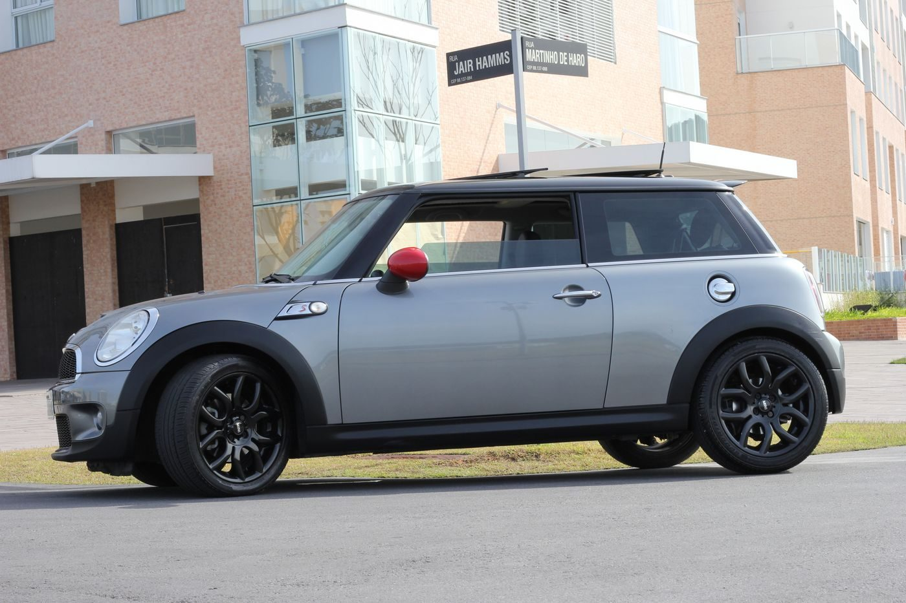

Birmingham, Alabama
Transmission work and full-service repair, foreign and domestic
A full-service auto repair and transmission shop with 40 plus years of experience, a 12-month guarantee on most repairs, and early bird drop-offs.

Birmingham, Alabama
A full-service auto repair and transmission shop with 40 plus years of experience, a 12-month guarantee on most repairs, and early bird drop-offs.
M and B Transmissions and Auto Repair does full-service automotive repair and transmission work, foreign and domestic, with 40 plus years of experience. Most repairs carry a 12-month guarantee, and early bird drop-offs are available.


462 35th St N, Birmingham, AL 35222
Monday to Thursday 7:00 AM to 5:00 PM, Friday 7:00 AM to 3:00 PM